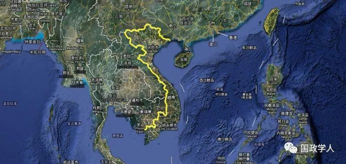

收录于合集

内容简介
[ 作者简介] 赵卫华，广东外语外贸大学、广东国际战略研究院教授，硕士生导师。
[ 基金项目] 国家社科基金重点项目“中越南海争端的历史、现状、趋势与中国的对策研究”(17AGJ006);国家社科基金“维护国家海洋权益”专项研究“四种海权发展模式互动中的周边国家和域外国家的海洋政策及其中国对策研究”(17VHQ007);广东国际战略研究院暨教育部战略研究基地重大项目“南海问题的下一步走势及中国的策略选择研究”(17ZDA14)。
[ 来源] 东南亚研究2019年第1期
[ 编辑] 晋 玉
[ 校对] 李 甜 丁伟航
内容提要
阮富仲主政后，越南与中国争夺南海领土主权的总体立场虽然没有变化，但在海域主张管辖范围、岛礁法理地位、岛礁和海域攻防重点等问题上均做出了重大政策调整。此次调整的实质是，越南在中国崛起和美国战略重心东移的双重背景下，利用地缘政治格局的变动，以牺牲中国的利益为筹码，放弃部分不切实际的权利主张，争取域外势力和东盟诸国的介入以及国际舆论的支持，推动南海问题国际化，借助所谓时代的力量追求本国利益的最大化。越南在南海的战略性收缩，试图以名义上的让步换取既得实质性利益的巩固，集中体现了阮富仲所倡导的以柔克刚、以退为进的务实外交思想，是越南在全面融入国际新形势下做出的阶段性战略调整。它使中越两国在南海的争端更加复杂，中国方面亟需认真应对，未雨绸缪。
[ 关键词] 越南;南海政策;阮富仲;中越关系;地缘政治;中国崛起

一、越南南海政策调整的背景与研究综述
**
**
2009 年后，随着中国的加速崛起和美国战略重心的东移，越南国内在如何应对南海问题和对华政策问题上不同的声音逐渐增大。 一种观点以越南时任国防部长冯光青大将、越共中央军委机关报《全民国防》总编辑阮玉茴少将为代表，主张在中美之间维持平衡，在中越友好的框架内处理中越南海争端 。阮玉茴少将认为:美国介入南海虽然暂时对越南有利，但美国只是利用越南，不会从根本上放弃对越南的颠覆政策;为了本国利益，美国很可能最终以牺牲越南利益为代价同中国达成妥协。若越南完全倒向美国，则越南最终很可能成为中美两大国博弈的牺牲品，越南最好的选择就是维持与中美两国的平衡。而针对联美制华之说，冯光青大将更是公开否认美越结盟的可能性，表示愿与中美同时发展友好关系。另一种观点则视中国为主要威胁，主张借助以美国为首的域外大国抗衡中国，该观点受到时任越南总理阮晋勇和前驻华大使阮仲永等人的支持。越共十一大在讨论《社会主义过渡时期的国家建设纲领》时，因没有加人针对中国的内容，遭强硬派抵制，经时任书记处常务书记张晋创的努力之后，才勉强以微弱多数通过。而阮晋勇更在香格里拉峰会公开表示:某个大国威胁南海的和平，越南欢迎域外大国以维持区域和平为目的的介入。
阮富仲就任总书记后，针对上述不同意见和国际环境的变化，实施《中国工程》研究，评估中国崛起对亚太格局、南海问题和越南等各方的影响，逐步完成了对南海政策的调整。此次南海政策的变动，是越南在时代大背景下，针对亚太地缘格局变动作出的一次具有战略全局性的调整，并经受了“981”事件和“南海仲裁案”的考验，其影响将远远超出阮富仲的任期，对中国在南海领土主权和海洋权益维护产生复杂的影响。深入认识此次政策调整，探究其产生的背景和动因，预测其未来走势，知己知彼，对于管控中越两分歧，维护中越关系稳定，维护中国海洋权益，探索和平解决中越南海争端的途径具有极为重要的意义。
关于阮富仲时期的越南南海政策，目前已有不少成果。就国内而言，赵卫华认为2012年以来，越南的南海政策已经由扩张转为实质性既得利益的维护，越南在大国平衡中更注重对中美两国的“双向制衡”。李春霞认为越南正试图将南海问题国际化和东盟化。曾勇等人也持类似的看法。李金明认为越南在南海目前正由积极扩充军备转向保持克制，同意以和平方式解决南海争端。张明亮认为越南的“南海问题化”外交为越南争取到了更多的国际支持，缓和了越南与菲律宾、马来西亚的海洋争端，甚至越文之间的海域重叠只是一种理论上的重叠，并没有对双方产生实质的影响。国外的相关成果大多来自越南，且大多属于对越南官方政策的阐述。阮越龙、陈公轴等人主要从历史和法理结合的视角阐释了”范文同公函”的法理效力，认为该公函没有法律效力。阮长江等学者则主要从国际司法或仲裁角度论述了越方的主张，认为国际司法或仲裁途径是政治手段不能奏效后，以和平方式解决南海争端的最有利的选择。阮鸿滔主要从海洋法公约的角度阐释了越南权利主张的依据和缺陷，认为越南应该严格依照1982年《联合国海洋法公约》（以下简称《公约》)提出海洋权益主张。阮黄甲、阮玉长则主要从地缘战略方面论述了越南在南海问题上的战略选择，指出越南要积极融入国际，借助国际社会的力量维护越南的”主权”。
在上述已有研究成果中，部分国内学者分别从不同的角度涉及到阮富仲时期越南南海政策的变化，给出了许多颇有价值的论述和判断。然而，国内的研究大多是对相关问题和议题的应对性研究，缺乏一个整体的视野，并没有认识到阮富仲时期越南南海政策调整的时代意义，也没有认识到越南对扇形线态度和政策的根本性变化;也有个别学者从表象出发，对于阮富仲时期南海政策的调整做出了过于乐观的判断，没有认识到其对中国主权和海洋权益维护带来的相关挑战。至于越南学者的研究，与其说是研究，不如说是对阮富仲时期越南南海政策的阐述更为合适， 与中国学者历史、国际政治和法理研究相互分离的现状不同，越南学者的研究大多是历史、法理和地缘政治兰者高度结合在一起的 ， 比如阮玉长和阮黄甲的研究虽以地缘研究为主，但历史分析和法理分析做得极为到位，阮鸿滔虽侧重法理研究，但法理研究和地缘研究结合得也非常成功，这是非常值得国内相关研究借鉴的。 本文在此拟从地缘、法理和历史结合的角度对阮富仲时期南海政策的调整、演变及其对中越南海问题的影响进行综合性的分析，以期尽力反映阮富仲时期越南南海政策调整的内外动因及其对中国南海主权和海洋权益维护的影响，对国内认识越南南海政策调整的实质有所帮助。
二、越南南海政策的演变与调整
**
**
在阮富仲执政之前， 越南的南海政策大致可以分为两个阶段:第一个阶段是1945-1975年，越南完全承认中国对西沙群岛、南沙群岛及其周边海域的主权;第二阶段是1975-2011年，越南利用中国对南沙水域鞭长莫及的困境，采取“变礁为岛，占岛扩海”的政策，不断蚕食抢占中国南沙的岛礁。 2011年阮富仲上台之后，可视为第三阶段，但促成该阶段形成的最初动因却是在农德孟执政末期。2009年后，随着国力的快速增长，特别是中共十八大后中国海洋强国战略的顺利实施，中国维护领土主权和海洋权益的决心在日益增强。同时，域外大国和东盟诸国对南海问题的介入和关注也在不断加深。在上述背景下，越南国内对南海及对华政策分歧渐增，原有的南海政策已经难以为继。为最大程度地维护越南既得利益，协调内部矛盾，阮富仲上台后对越南南海政策进行了阶段性的战略调整，其主要内容和特点如下:
（一）、重新界定南海诸岛的法理地位，调整主张管辖海域的范围
1977年，在《越南关于领海、专属经济区和大陆架的声明》中，越南主张其对西沙和南沙群岛享有专属经济区和大陆架，扇形线即是在此背景下出现的。2011年10月，越南外交学院“‘东海’研究中心”主任陈长水在接受英国媒体采访时表示，越南在西沙和南沙岛礁法理地位问题上同意美日和东盟各国的主张，认为上述岛礁不能够维持自身的经济生活，不能享有自身的专属经济区(EEZ)和大陆架，最多只能拥有12海里的领海。2012年6月，越南国会正式通过《越南海洋法》，其第20条第2款规定“不适合人类居住或者不能维持自身经济生活的岩礁不能享有专属经济区和大陆架。”2014年5月23日，越南边界领士委员会副主任陈维海在代表越南政府答记者问时明确表示:依据1982年《联合国海洋法公约》，越南认为包括中建岛在内的西沙群岛在法理上属于岩礁，不适合人类居住，无法维持自身的经济生活，因而无权享有专属经济区和大陆架。至此，越南关于西沙群岛和南沙群岛法理地位的立场完全明朗化。
越南在重新界定西沙群岛和南沙群岛的法理定位后，在法理上排除了两群岛可衍生专属经济区和大陆架的权利，也使得越南主张管辖的海域范围出现了部分程度的缩减。 2014年8月，时任越南驻科威特大使阮鸿滔指出”正是《公约》关于专属经济区和大陆架的各项新规定，越南才得以变成一个拥有100万平方公里内水、领海、专属经济区和大陆架的国家……越南的上述权利完全是由《公约》带来的。”上述越南外交高层的表态和相关法律条文的变更实际上包含两重含义: 首先，越南对西沙群岛和南沙群岛诸岛礁不再从整体或个体层面主张专属经济区和大陆架的权利。其次，将本国主张管辖的海域范围从扇形线内的全部水域收缩到《公约》规定的专属经济区和大陆架范围内。第三，选择性地援引《公约》，曲解和滥用对其有利的专属经济区和大陆架制度，而完全回避对其不利的“历史性所有权”条款。
除对岛礁法理定位和主张管辖的海域范围做出调整外，越南还对外国船只和军机经过本国管辖海域和海域上空的有关规定作出了重大调整。 《越南关于领海、专属经济区和大陆架的声明》要求外国船只、航空器经过其领海、专属经济区和大陆架海域及其上空时尊重越南主权，但表达较为笼统。 《越南海洋法》新条例则明确规定，任何外国船只均享有从越南领海无害通过的权利，军舰在无害通过之前需要向有关部门通报，无需批准。关于专属经济区的航行问题，越南规定任何国家的任何船只在尊重越南主权权利的前提下，拥有在越南专属经济区自由航行的权利，无须获得越南相关部门的批准。但在越南专属经济区或大陆架架设海底电线等行为，仍需向有关国家管理机关报备，并遵守越南的相关法律 。
（二）、调整攻守重点，力争越南利益最大化
长期以来，西沙群岛一直在中国主权的有效管辖下，越方尽管长期觊觎其主权且不时对中国行使主权说三道四，但双方基本上相安无事。在《南海各方行为宣言》(DOC)磋商的过程中，越南曾强烈坚持将西沙区域包括在DOC的适用范围之内，并积极活动以争取东盟和相关域外大国的支持，企图借国际社会迫使中国承认西沙群岛存在领土争端。然而，越南此举并没有得到东盟各国和美日等域外大国的支持，在中国的坚决反对下遂作罢。 此后，在双方国力悬殊的情况下，越南继续采取北守南攻战略，在西沙采取守势，在南沙海域企图通过域外大国和东盟各国的介人，推动南沙问题国际化，以维护其既得利益。
近年来，随着实力的快速上升和海洋强国战略的顺利实施，中国维护南海领土主权和海洋权益的能力和决心日益增长，这进一步压缩了越南海上扩张的空间。但越南在染指西沙岛礁主权无望后，又将目标锁定在海域争夺上。2010年7月，希拉里在河内东盟地区论坛(ARF)外长会议上宣称美国在南海自由航行方面拥有国家利益，反对使用或威胁使用武力，要求各方依据《公约》提出各自的海洋权利，并强调任何对南海海域的主权要求都必须基于地貌特征，以符合现行国际法的方式提出。希拉里所谓的海域主权必须基于地貌特征的立场明确表达了美国在海域管辖方面对历史性权利的反对，标志着美国的南海政策开始由模糊转向有利于越南的清晰化，从而在实际对越南南海政策调整发挥了指引和鼓励作用。
以希拉里谈话为起点，越南先后通过阐释岛礁法理地位，制定《海洋法》等举措完成规则层面的政策调整。 虽然尚没有付诸实践 ， 但上述法理和规则的调整显示，在领士扩张空间受到各方制约后，越南已经将在南海的主要目标转向专属经济区和大陆架的争夺。 目前，南沙群岛与越南大陆之间的海域基本上在越南的控制下，其扩展的目标主要集中在西沙群岛以西的海域。虽然中国一再强调，愿意与越南谈判协商海域管辖范围的划分，但越南希望的结果显然与中国大相径庭。依据其单方面的认知和主张，越南认为西沙群岛在中越海上划界时不应当具有效力，两国的专属经济区和大陆架起点只能分别从越南大陆和海南岛算起。
2014年5月，越南以中建岛只能拥有12海里的领海，“981”海洋石油平台在位于中建岛西南17海里处实施勘测侵犯了越南主权水域为由，派遣大量民用和执法船只进入中国西沙水域进行骚扰。这是自1974年1月19日后越南公务船首次公开闯入中国西沙水域核心区域进行挑衅。事件发生之时，美国也派战机飞赴事发现场，对中国施加压力，使得越南更加有恃无恐。“981”事件之后，越南不断地派遣所谓的“渔船”与中方执法力量周旋，对中国西沙海域进行常态性的骚扰。越南将此称为“老鼠逗猫策略”，并借此来宣示越南的所谓“主权”。阮鸿滔声称，“981”事件的意义在于改变了美日和东盟诸国在西沙海域的中立立场，使越南重新得到了在该区域宣示主权的机会，促成了越南南海政策的调整。
（三）、利用舆论工具，争取国际同情
随着中国维护南海主权的能力和意志日益增强，越南对中国采取武力收复南沙的担忧也日益增加。如何阻止中国使用武力，维护其既得利益，成为越南南海政策考量的重中之重。 越方认为两国硬实力相差悬殊，但越南对中国的认知要远超中国对越南的了解，越南强调要充分发挥自身优势，利用舆论，争取国际同情，维护其在南海的利益。
首先，通过组织国际学术研讨会，宣扬越南的观点，借学术名义达成政治目标。 越南企图通过会议来争取国际学界的支持，再通过学者去影响所在国政府和舆论，进而赢得国际同情。农德孟时期，越南举办了“‘东海’问题国际学术研讨会”和“国际越南学会议”两个系列的会议，以此推进越南的利益。前者主要侧重于法理、地缘政治和安全等现实性问题，后者则属于综合性论坛，更注重从历史、人文和舆论营造方面提供长线支持。阮富仲任职后，越南进一步以幕后支持的形式资助他国学者主办南海国际会议，借以影响各国学界、政界和舆论界。例如，“南海仲裁案”后，越南马上资助美国记者JamesBorton组织了一场名为“海牙仲裁后南海中的岛屿和岩礁”研讨会，召集一批亲越学者参加，会上越南学者阮竹会提出建立”海洋和平公园”的倡议，企图借此来维持南沙区域的现状，争取国际舆论的支持。
其次，成立“‘东海’研究基金”，为越南对中国的舆论战提供资金支持。 2014年3月27日，越南宣布设立“‘东海’研究基金”，由越南前副总理兼外交部长武宽担任高级顾问，外交学院院长邓廷贵，现任越南外交部副部长)任主席，外交学院“‘东海’研究中心”主任陈长水担任经理。越南将基金会的宗旨和目的定位为:扩大南海问题研究的规模，提高研预测南海变化趋势的各项能力;开展历史、法理资料建设，形成论据，以服务于越南对华斗争、争取区域各国及国际社会支持的需要。在基金成立大会上，武宽表示:成立“‘东海’研究基金”的目的就是要使世界各国更好地理解越南的政治立场并支持越南在外交、国际政治方面的斗争，以保卫越南的主权和领士完整。截至2018年7月，“‘东海’研究基金”共支持了245项相关问题的研究和21起外宣活动，其角色日益引人注目。
最后，重新定位西贡政权的法理地位，为越南侵占南海寻求合法性依据和舆论支持。 长期以来，越南一贯以“西贡伪政权”定位南越政权。然而，从2012年开始，越南开始逐渐为南越政权正名，开始称之为“西贡政权”，甚至以“越南共和国”取代“西贡伪政权”的称呼。此举正是出于为其侵占南沙岛礁辩护，争取国际舆论支持的需要。越南侵占南沙岛礁后，曾长期否认“雍文谦谈话”、“范文同公函”等一系列有利于中国主权的证据存在。然而，南越流亡人士却不断公开当年的“范文同公函”，用以指责越共卖国，故越南政府继续否认这些事实无异于掩耳盗铃，更有损其国际声誉。在此背景下，越南为南越政权正名，其实就是想利用当年南越对西沙和南沙的侵略与范文同和雍文谦等人的言论进行切割，否认公函的法律效力。
三、越南调整南海政策的动因
**
**
越南新一阶段的政策调整有着深刻的时代和地缘背景，反映了其对世界趋势、国际格局和国际法的新认识和新判断。通过此次调整，越南进一步推动了南海问题的国际化，使得南海的形势更加复杂化。 总体而言，此次越南南海政策的调整主要受以下几种因素的影响:
- 中国崛起
20世纪七八十年代，中国战机的作战半径无法覆盖南沙海域，难以有效遏制越南在南海的持续扩张行为。南沙群岛距离海南榆林基地大约1000-1700公里，中国海军从榆林基地出发需要2-3天才能到达;而相关海域距离越南却只有300-400公里，越南海空力量可随时进出南沙群岛水域，能够使捷地为占岛越军提供各种军需物资和后勤保障。歼轰-7和苏-27战斗机服役后，中国在南沙海域的不利地位虽有所改善，但依然难以完全覆盖南沙海域，且存在战机滞空时间不足等问题，仍旧无法完全应对越南的挑战。基于此，越南外交部外交战略研究所研究员何英俊认为，中国海军没有空中力量的支持，根本无法在南沙海域持续作战，也就难以支持本国的主权诉求，因此越南虽然相对弱小，却可以维护本国的“主权”。
2000年后，中国经济发展进入快车道。2010年，中国的国民生产总值(GDP)超越日本跃居世界第二位;到2017年，中国的GDP已经相当于美国的63%，日本的2.5倍。随着经济的高速增长，中国军队逐渐实现了由机械化向信息化的过渡，维护国家主权的能力不断增强。特别是随着海洋强国战略卓有成效的实施，中国海空两军的战力获得了飞跃性的提升，海军迅速发展为一支初具远洋作战能力的蓝水海军，空军则成为除美军外唯一列装第5代战机的空中量，从而完全具备了对南沙海域的全域作战能力。中国南海岛礁建设完成后，越南对南沙岛礁的距离优势完全不复存在，这不仅打破了其夺取西沙岛礁及其周边海域的最后希望，也动摇了其在南沙地区既得利益存在的基础。
在此背景下， 越南南海政策表现出阶段性的战略收缩，重点由如何抢占更多的岛礁变为如何维持既得利益。 考虑到中国在西沙主权问题上的坚决态度，越南倾向于将西沙和南沙问题分开处理，在南沙利用区域外国家众多的有利环境，争取维持并巩固现状;在西沙则实际上放弃对岛礁主权的争夺，重点争夺对专属经济区和大陆架海域的管辖权。 《中国工程》的研究结论认为:首先，由于中国一贯坚持西沙群岛不存在主权争端的立场，且事实上长期管辖控制西沙群岛，因此越南不可能通过谈判的途径获得西沙群岛的主权。其次，双方实力悬殊，越南不具备以武力方式“捍卫”西沙群岛主权的能力。最后，由于“范文同公函”的存在，越南受禁止反言的制约，即使走国际司法途径，也难有胜算。 鉴于此，《中国工程》报告建议在南沙海域争取维持现状，但准备做必要的让步;在西沙地区做好领土主权无法实现的心理准备，但要坚决维护越南对专属经济区和大陆架的主权权利和海洋权益。
越南翰林院中国研究所前所长阮辉贵则更为明确地表示，越南承认越中两国在南沙主权问题上存在分歧，希望通过谈判以和平的方式解决两国争端。在美国等域外大国存在的情况下，中国尚不会以武力夺取越南控制的岛礁，然而却从来没有承诺不使用武力。正是出于上述担忧，越南才奉行与美国、日本、印度、澳大利亚等国协调的外交路线。如果中国能够承诺在双方和平协商或谈判解决南沙争端前，不以武力夺取越南控制的岛礁，那么越南就可以保证永远不再提西沙群岛的主权问题，也不会利用美国介入越中争端。
- 亚太和南海地区的地缘政治变化
南海地处世界的地缘枢纽，是中国、日本、韩国和东盟各国的海上生命线，承载着全世界一半以上的海上天然气运输量和约113的原油运输量;约占韩国669毛、日本60%的能源供应也需要经过南海航线进口。目前，中国石油的对外依赖度已经超过50%;2030年，预计这一比例将超过80%，其中789毛需要经由马六甲和南海一线运输。美国要继续维持在亚太地区的霸权，就必须掌控南海，扼住中日韩和东盟诸国的海上生命线，保持其亚太同盟体系的向心力，迫使中国遵守由美国制定的规则。一旦中国完全控制南海地区，则意味着日韩和东盟诸国的海上生命线受制于中国，从而直接导致美国亚太同盟体系的弱化乃至瓦解，也意味美国将最终在亚太地区退至次要地位。
虽然中国一再强调南海的航行自由不存在问题，但美国从惯有的现实主义思维出发，认为实力而非言语才是判断一个国家意图的依据。随着中国国力的迅速增长，中美矛盾也不断突显。美国认为，中国的最终目的是从根本上改变现有的规则和秩序，实现全球权力的再分配;中国日益增强的国力及其在南海岛礁问题上的诉求，说明中国意在重塑边界和世界秩序;如果放任中国在南海的行动，结果必然是中国在亚太地区占据优势，彻底颠覆现有秩序，形成以中国为中心的新秩序。
为确保全球霸权和在亚太地区的主导地位，美国战略重心东移，纠集日澳印等域外大国，拉拢越南等东盟诸国，防范遏制中国，南海遂成为两国博弈的热点。日、印、澳及其它个别西方大国在各自利益的驱使下，积极追随美国介入南海问题。例如，2018年8-9月间，英国“海神之子”号船坞登陆舰和日本“加贺”号直升机航母先后以“自由航行”为借口到南海进行挑衅。澳大利亚国内部分人甚至提出组建一个由美日澳等西方国家主导的“南中国海委员会”，来管控南海争端。东盟诸国则既希望从中国获取经济利益，又对中国充满疑惧，企图借助域外大国施压，迫使中国接受南海的现状。俄罗斯在南海虽然与美日表现不同，但却一直是越南武器装备的主要供应方，为越南提供了诸如基洛级潜艇和苏-30战机在内的大量尖端武器，并长期与越南合作开采中国断续线海域内的油气资源。
在南海问题上，无论是以美国为首的域外大国，还是东盟各国，出于对中国崛起的疑惧或担忧，更希望维持目前南海被各国分割的现状，推动南海的公海化，延续美国控制下的南海秩序，最大程度地压缩中国在南海的存在，甚至希望将南海置于某种国际共管之下，以防止中国在南海占据主导地位。这一现实表明，当前亚太地缘结构使得域内外各国在南海问题上与越南的利益产生了重叠，构成了越南所谓的“时代力量”，成为越南调整南海政策的动因和前提 。 越南虽然放弃了部分不切实际的主张，但却使其既得核心利益变得更有保障。
- 越南地理位置
越南东临南海，国士呈S形，由北向南长达1650公里，东西最窄处只有50公里，没有战略纵深，地缘位置十分脆弱，极易被外敌拦腰截断。 越南与中国争夺南海主要出于两个目的:首先是安全上的考虑。 占领西沙和南沙群岛可以大大拓展越南的战略纵深，延长对外部威胁的预警时间。特别是占领南沙群岛部分岛礁后，越南的战略纵深向东扩展了500公里以上，有效弥补了越南的地缘劣势。 其次是经济上的考虑。 越南的目标是成为海洋强国，2007年9月，越共在《面向2020年的越南海洋战略》中明确提出，到2020年使海洋经济占到总GDP的53%-55%，使越南成为海洋强国。越南估计南海可以满足人类对各类海产需耍的60，对各种矿产资源需要的25%。而最近备受各国关注的新型能源可燃冰，估计贮量达690亿吨油当量，也大都位于U形线水域。上述丰富的资源无疑也是越南侵占南海的重要诱因。
越南扇形线水域与中国断续线水域相比，更适合援引专属经济区和大陆架制度主张海洋权益。断续线内传统水域南北窄长，水域纵深远超200海里，而越南大陆领海基线的长度则恰与断续线水域西侧南北长度类似，其扇形线的东西纵深，从其领海基线算起，虽超出200海里，但相差并不太大。两国濒海部分地理位置的差异和各自特点，使得越南在主张专属经济区和大陆架时处于非常有利的地位。针对地理条件为越南援引《公约》大陆架和专属经济区制度带来的优势，阮鸿滔表示“这是大自然和国际法给予越南的双重眷顾”。依据专属经济区和大陆架制度的相关规定，越南从其大陆领海基线算起，其专属经济区和大陆架基本上完全覆盖了越南大陆与西沙群岛、南沙群岛之间的海域。而中国由于断续线水域南北窄长的地理特点，从海南岛南端和中国大陆沿岸算起，专属经济区和大陆架的南部界限只能延伸到西沙群岛南部和中沙群岛北部水域，根本无法到达南沙水域。考虑到域内外国家一致将南海诸岛定位为岩礁和低潮高地的现实，如果中国依据专属经济区和大陆架制度主张海域管辖权利，则中国控制的南沙岛礁，要么变成没有专属经济区和大陆架的飞地，被其它国家的专属经济区或大陆架水域包围;要么就彻底丧失海域管辖权利的主张资格，被划入他国的专属经经济区或大陆架海域。相反，在否定了南沙各岛礁可衍生专属经济区和大陆架权利的情况下，越南可利用其有利的地理位置确保其大陆沿岸至西沙和南沙群岛之间的绝大部分核心海域，同时又能运用其选定的规则名正言将中国排斥出去。
四、越南南海政策调整的实质与未来走势
**
**
- 越南南海政策调整的实质
越南此次政策调整并不是对原有政策的简单修补，而是在中国崛起和美国战略重心东移的时代大背景下，依据其所处的地缘环境的变化，以巩固其在南海既得利益和最大程度占有南海海域为目标的系统性战略调整。越南重新界定南海诸岛的法理地位，淡化扇形线，收缩声索海域范围，和菲律宾、马来西亚、印度尼西亚等国就南海断续线内的争议岛礁和海域达成默契，在无害通过条款上模糊处理，为美日印等国军舰经过其领海提供便利。 就力度而言，这一调整堪比1975年，只不过因为其循序渐进和较为隐晦的处理方式，并没有引起外界太多的注。从表面上看，此次政策调整对越南而言是一次战略收缩， 然而，实际上越南不仅没有放弃任何实质性的利益，反而以此为契机协调了与美、日、印、澳和俄罗斯等域外大国及东盟各国之间的关系，获取上述各国的支持，化解了与菲律宾、马来西亚和印度尼西亚等国在南海的矛盾，为维护本国既得利益争取了极为有利的环境。
越南此次政策调整的实质仍是利用对其有利的地缘矛盾达成本国的利益诉求。当前，虽然中国综合国力日盛，但却面临着严重的次强困境。不仅美国，日本、印度和澳大利亚等诸多域外国家也不愿意接受中国崛起的现实。“南海仲裁案”虽主要系美日支持菲律宾挑起，但也与越南的支持和推动分不开。此次调整中，越南充分利用了中国与各国的矛盾，通过选择性地援引对其有利的条款，以牺牲中国领土主权和海洋权益为代价来拉拢、改善与美日等域外大国和东盟各国的关系，进而达到维护本国既得利益的目的。越南的政策，符合美日印澳等域外大国防范遏制中国的战略需要，也有利于菲马等东盟国家否认中国在南海领土主权和海洋权益的现实要求，即便是俄罗斯也不会反对，从而达到了拉拢各国一致对华的目的，大大压缩了中国南海维权的选择空间，恶化了中国在南海问题上的国际舆论环境。
- 越南南海政策的未来走势
阮富仲调整南海政策的根本目的是利用对越南有利的地缘格局变化巩固既有成果，追求越南在南海利益的最大化，是越南对中国崛起和亚太地缘政治环境明显变化做出的反应。 虽然越南以退为进，重新界定岛礁法理地位，调整海域主张范围，借助域内外势力确保既得利益的大方向已定，但在如何对待和处理其控制的位于专属经济区和大陆架区域之外的岛礁问题上，越南内部意见尚不统一 。该问题最终如何解决，不仅受中国进一步崛起和中美力量对比的影响，也取决于越南内部力量对比及其对“南海仲裁”结果和中越关系的评估。
首先，越南坚持西沙和南沙诸岛礁属于岩礁，坚持援引专属经济区和大陆架制度声索海洋权益的政策已难以改变，这是越南此次南海政策调整的基本盘。 依据《公约》的相关规定，越南主张的专属经济区和大陆架除了与菲律宾、马来西亚、文菜和印度尼西亚有部分重叠外，绝大部分位于断续线海域内，主要争端对象是中国。而域内外各国出于与中国的矛盾，均会给予越南某种程度的支持，越南正是借此与上述各国达成了诸多默契和协调。在断续线被裁定为“非法”的情况下，坚持以专属经济区和大陆架制度作为海洋划界的依据，既有利于越南在南海利益的最大化，又可以最大程度地削弱中国。
其次，关于如何处理超越其专属经济区和大陆架主张管辖范围之外所占岛礁及其附近海域的主权归属问题， “ 在南海仲裁案”后，越南内部尚存争议。 越南出于争取域外大国和东盟诸国支持的目的，最大程度地压缩中国海域的需要，接受了西沙和南沙诸岛礁不能拥有专属经济区和大陆架的主张，但并没有放弃在已占岛礁主张领海的权利。因而越南一方面依据专属经济区和大陆架制度主张海洋权利，另一方面则极力证明其对南沙和西沙各岛礁的历史性主权，以确保其对上述岛礁的实际控制权。然而，“南海仲裁案”的结果对于越南而言利弊兼有，越南仅对仲裁结果表示欢迎，却始终没有承认其合法性。对于该问题，阮鸿滔等人主张严格依据《公约》专属经济区和大陆架制度的规定确定越南的主权水域。阮庭廉等人则主张从战略的角度看待该问题，尽力以维持原状为基础解决南海问题。吴永龙等人在“仲裁案”落幕后则主张在岛礁问题上与菲律宾等国协商，孤立中国，达成对越南最有利的解决方案 。阮氏兰英认为“南海仲裁”对越南不具备约束力，但越南应充分利用对其有用的部分。目前来看，越南的反应更多参考了阮氏兰英的主张，但未来如何演变仍有变数。
再次，近期越南将中越争端诉诸国际司法或仲裁程序的可能性微乎其微。 尽管越南经常利用该话题威胁中国，但基本上只是作为与中国博弈或施压的工具，付诸实践的可能性几乎不存在。越南认为，由于中国已就领土主权问题作了保留，除非中国同意，国际司法或强制仲裁不适用于中越之间的领土主权争端;即使中国同意，受禁止反言原则的限制，越南也很难赢得诉讼。越南虽可仿效菲律宾以迂回的途径提请强制仲裁，但结果将会弊大于。“南海仲裁”的裁定对越南利弊兼有，目前越南完全可以选择性地援引对其有利的部分，若仿效菲律宾提起强制仲裁只会强化对其不利的部分，除了为菲律宾和马来西亚做嫁衣裳外，还将恶化与中国关系。因而，继续选择性地利用“南海仲裁案”，而非起诉中国，才是越南最好的选择。
最后，越南会对中越双方就南海问题对话表现出日趋强烈的主动性。 接近越南决策层的主流派学者认为，中国的崛起是不可阻挡的。短期来看，越南可以借助域外大国和东盟诸国来平衡中国的实力增长，但长期而言，中国在地区内占据优势将不可避免，届时美国很可能以牺牲越南的利益为代价与中国达成妥协，时间拖得越久，越南就越被动。2016年8月， 范平明在越南第29届外交工作会议上指出:虽然美国出于和中国竞争的目的会鼓动包括越南在内的盟国和伙伴同中国对抗，但美国绝对不会为了越南在“东海”的主权同中国发生军事冲突，且越中在南海发生军事冲突，美国除了外交辞令不会采取任何实质性的于段支持越南。相反，美国很可能在中国满足其在南海 “ 航行自由”等核心要求后，与中国进行利益交换，出卖越南，承认中国在南海的主权要求，越南对此一定要有清醒的认识 。 基于上述判断，越南的真实意图其实是希望与中国维持友好，斗而不破。同时，利用域外大国尚可对中国形成有效制约及东盟诸国尚对中国有影响力的有利时机，抓紧时间与中国谈判，通过必要的让步，争取以和平的方式达成对越南有利的解决办法，至少是阶段性的解决办法。
虽然越南国内在南海问题上存在诸多对华不友好的声音，但从其政策调整与众多高层及智库传递出的声音来看，越南在南海依然存在着向中国让步的空间。首先，越南企图以承认西沙群岛归属中国为条件，换取南沙维持现状。其次，在南沙群岛再对中国作有限的让步，以争取达成有利于越南协议。从其核心利益来看，越南在南沙可以让步的心理临界线大致就是其在南沙海域自行划设的专属经济区的东部界限，该线以东是越南可以谈判的部分，该线以西属于其要确保的核心利益区，不可谈判。而西沙群岛则是越南用以争取核心利益的筹码，属于可以放弃的部分。在南沙问题完全基于和平解决的前提下，越方可以接受的让步范围大致为承认该线以东中国实际控制的岛礁归属中国，同时在被其实际控制的该线以东的部分“低潮高地”归属上稍作让步，并且放弃对西沙群岛的主权要求。如果中国的要求在其让步范围内，越南会倾向于政治解决，而一旦突破其可让步的底线，则越南就有可能诉诸司法途径。从成本——收益选择的角度看，越南以部分被海牙仲裁庭宣布为“低潮高地”的岛礁为代价，与中国达成和解，比以中越关系为代价向菲律宾、马来西亚等国让步更为划算。
**
**
结 语
**
**
随着越南南海政策的战略性调整，南海的形势更趋复杂。越南利用国际格局变化和其占据的地理优势，通过选择性地援引和曲解《公约》的相关条款，以牺牲中国领土主权为筹码，将南海问题向国际化的方向进一步推进。特朗普上台后，以美国为首的域外大国在南海的挑衅有升级之势，使中国领士主权和海洋权益维护面临着更加严峻的挑战。当前，中国正处于发展的关键期，国家将强而未强，依然需要一个和平安定的环境。而对越南而言，维护和平的发展环境也是其面临的两大战略任务之一。推动南海问题国际化，促使美国等域内外国家介入南海固然有利于加强其在南海争夺中的地位，但南海局势恶化显然与其维护和平发展环境这一战略任务的目标相悖。而且，越南高层和学界非常清楚，美国介入南海，鼓动越南与中国对抗，完全是出于美国利益的需要，在关键时刻美国根本不会对越南施以援手。因此，面对南海局势不断复杂化的趋势，从短期着眼，管控分歧，维持南海形势稳定，符合中越双方的根本利益。从长期而言，在实事求是、遵守国际承诺，全面、客观、善意地援引国际法的基础上，相向而行，摒弃借助外力打压的过时做法，通过和平协商的方式追求共赢，达成双方都能接受的政治解决方案，才是最终解决中越南海争端的正确方向。
更多阅读
【地区秩序】阿米塔夫·阿查亚：权力转移还是范式变化？中国崛起与亚洲新兴安全秩序 | 国政学人
国政学人 （ID：guozhengxueren)
为方便学人及时阅读高质量文章
别忘把国政学人设置 星标 哦~